Lecciones de circuitos eléctricos - Volumen III
Capítulo 13
TUBOS DE ELECTRONES
- Introduction
- Early tube history
- The triode
- The tetrode
- Beam power tubes
- The pentode
- Combination tubes
- Tube parameters
- Ionization (gas-filled) tubes
- Display tubes
- Microwave tubes
- Tubes versus Semiconductors
Introduction
Un área de estudio a menudo descuidada en la electrónica moderna es la detubos, más precisamente conocido comotubos de vacío or tubos de electrones. Casi completamente eclipsada por los semiconductores o componentes de "estado sólido" en la mayoría de las aplicaciones modernas, la tecnología de tubos alguna vez dominó el diseño de circuitos electrónicos.
De hecho, la transición histórica de los circuitos "eléctricos" a los "electrónicos" realmente comenzó con los tubos, porque fueron con los tubos con los que entramos en un ámbito completamente nuevo de función de circuito: una forma de controlar el flujo de electrones (corriente) en un circuito por medio de otra señal eléctrica (en el caso de la mayoría de los tubos, la señal de control es un pequeño voltaje). La contraparte semiconductora del tubo es, por supuesto, el transistor. Los transistores realizan prácticamente la misma función que los tubos: controlar el flujo de electrones en un circuito mediante otro flujo de electrones en el caso del transistor bipolar, y controlar el flujo de electrones mediante un voltaje en el caso del transistor de efecto de campo. En cualquier caso, una señal eléctrica relativamente pequeña controla una corriente eléctrica relativamente grande. Ésta es la esencia de la palabra "electrónico", para distinguirla de "eléctrico", que tiene más que ver con cómo el flujo de electrones está regulado por la Ley de Ohm y los atributos físicos de los cables y los componentes.
Aunque los tubos ahora están obsoletos para todas las aplicaciones especializadas, excepto para unas pocas, siguen siendo un área de estudio que vale la pena. Al menos, es fascinante explorar "la forma en que se hacían las cosas antes" para apreciar mejor la tecnología moderna.
Early tube history
A Thomas Edison, ese prolífico inventor estadounidense, a menudo se le atribuye la invención de la lámpara incandescente. Más exactamente, se podría decir que Edison fue el hombre queperfeccionadola lámpara incandescente. El exitoso diseño de Edison de 1879 fue en realidad precedido por 77 años por el científico británico Sir Humphry Davy, quien demostró por primera vez el principio de usar corriente eléctrica para calentar una delgada tira de metal (llamada "filamento") hasta el punto de incandescencia (brillando al rojo vivo).
Edison pudo lograr su éxito colocando su filamento (hecho de hilo de coser carbonizado) dentro de una bombilla de vidrio transparente de la que se había extraído el aire a la fuerza. En este vacío, el filamento podría brillar a temperaturas candentes sin ser consumido por la combustión:
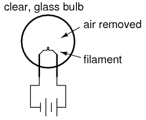
En el curso de su experimentación (alrededor de 1883), Edison colocó una tira de metal dentro de una bombilla de vidrio al vacío junto con el filamento. Entre esta tira de metal y una de las conexiones del filamento colocó un amperímetro sensible. Lo que encontró fue que los electrones fluirían a través del medidor siempre que el filamento estuviera caliente, pero cesarían cuando el filamento se enfriara:
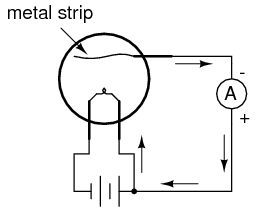
El filamento candente de la lámpara de Edison estaba liberando electrones libres en el vacío de la lámpara, esos electrones encontraban su camino hacia la tira de metal, a través del galvanómetro, y de regreso al filamento. Despertada su curiosidad, Edison conectó una batería de bastante alto voltaje en el circuito del galvanómetro para ayudar a la pequeña corriente:
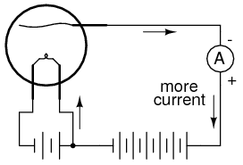
Efectivamente, la presencia de la batería creó una corriente mucho mayor desde el filamento hasta la tira de metal. Sin embargo, cuando se giró la batería, ¡había poca o ninguna corriente!
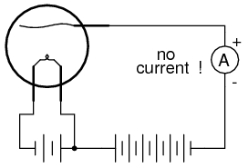
En efecto, ¡lo que Edison había encontrado era un diodo! Desafortunadamente, no vio ningún uso práctico para tal dispositivo y procedió a perfeccionar aún más el diseño de su lámpara.
El flujo de electrones unidireccional de este dispositivo (conocido comoEfecto Edison) siguió siendo una curiosidad hasta que J. A. Fleming experimentó con su uso en 1895. Fleming comercializó su dispositivo como una "válvula", iniciando un área de estudio completamente nueva en los circuitos eléctricos. Los diodos de tubo de vacío (las "válvulas" de Fleming no son una excepción) no son capaces de manejar grandes cantidades de corriente, por lo que el invento de Fleming no era práctico para ninguna aplicación en energía CA, sólo para pequeñas señales eléctricas.
Luego, en 1906, otro inventor llamado Lee De Forest comenzó a jugar con el "Efecto Edison", viendo qué más se podía obtener de este fenómeno. Al hacerlo, hizo un descubrimiento sorprendente: al colocar una pantalla de metal entre el filamento incandescente y la tira de metal (que ya había tomado la forma de una placa para una mayor superficie), la corriente de electrones que fluía del filamento a la placa podía regularse mediante la aplicación de un pequeño voltaje entre la pantalla de metal y el filamento:
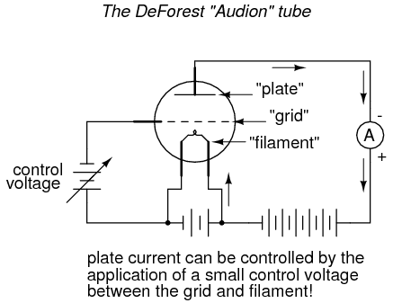
De Forest llamó a esta pantalla metálica entre el filamento y la placa unred. No era sólo la cantidad de voltaje entre la rejilla y el filamento lo que controlaba la corriente desde el filamento a la placa, sino también la polaridad. Un voltaje negativo aplicado a la rejilla con respecto al filamento tendería a obstruir el flujo natural de electrones, mientras que un voltaje positivo tendería a mejorar el flujo. Aunque había cierta cantidad de corriente a través de la red, era muy pequeña; mucho más pequeño que la corriente a través de la placa.
Quizás lo más importante fue su descubrimiento de que las pequeñas cantidades de voltaje y corriente de la red tenían grandes efectos sobre la cantidad de voltaje de la placa (con respecto al filamento) y la corriente de la placa. Al añadir la rejilla a la "válvula" de Fleming, De Forest había hecho que la válvula fuera ajustable: ahora funcionaba como unaamplificandodispositivo mediante el cual una pequeña señal eléctrica podría tomar el control de una cantidad eléctrica mayor.
El semiconductor equivalente más cercano al tubo Audion, y a todos sus equivalentes de tubo más modernos, es un MOSFET tipo D de canal n. Es un dispositivo controlado por voltaje con una gran ganancia de corriente.
Llamó a su invento "Audion" y lo aplicó vigorosamente al desarrollo de la tecnología de las comunicaciones. En 1912 vendió los derechos de su tubo Audion como amplificador de señal telefónica a la American Telephone and Telegraph Company (AT y T), lo que hizo práctica la comunicación telefónica de larga distancia. Al año siguiente, demostró el uso de un tubo Audion para generar señales de CA de radiofrecuencia. En 1915 logró la notable hazaña de transmitir señales de voz por radio desde Arlington, Virginia, a París, y en 1916 inauguró la primera transmisión de noticias por radio. Estos logros le valieron a De Forest el título de "Padre de la radio" en Estados Unidos.
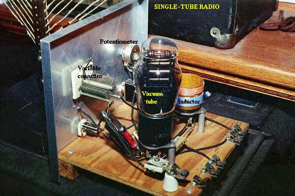
The triode
El tubo Audion de De Forest llegó a ser conocido como eltriodotubo, porque tenía tres elementos: filamento, rejilla y placa (tal como el "di" en el nombrediodose refiere a dos elementos, filamento y placa). Los avances posteriores en la tecnología de los tubos de diodos condujeron al refinamiento del emisor de electrones: en lugar de utilizar el filamento directamente como elemento emisor, se utilizó otra tira metálica llamadacátodopodría ser calentado por el filamento.
Este refinamiento fue necesario para evitar algunos efectos no deseados de un filamento incandescente como emisor de electrones. Primero, un filamento experimenta una caída de voltaje a lo largo de su longitud, ya que la corriente supera la resistencia del material del filamento y disipa la energía térmica. Esto significaba que el potencial de voltaje entre diferentes puntos a lo largo del cable del filamento y otros elementos del tubo no sería constante. Por esta y otras razones similares, la corriente alterna utilizada como fuente de energía para calentar el alambre de filamento tendería a introducir "ruido" de CA no deseado en el resto del circuito del tubo. Además, el área de superficie de un filamento delgado era, en el mejor de los casos, limitada, y el área de superficie limitada en el elemento emisor de electrones tiende a imponer un límite correspondiente a la capacidad de transporte de corriente del tubo.
El cátodo era un fino cilindro metálico que encajaba perfectamente sobre el alambre retorcido del filamento. El cilindro del cátodo sería calentado por el cable de filamento lo suficiente como para emitir electrones libremente, sin los efectos secundarios indeseables de transportar la corriente de calentamiento como tenía que hacerlo el cable de filamento. El símbolo del tubo de un triodo con un cátodo calentado indirectamente se ve así:
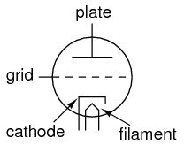
Dado que el filamento es necesario para todos los tipos de tubos de vacío, excepto unos pocos, a menudo se omite en el símbolo por simplicidad, o puede incluirse en el dibujo pero sin conexiones de alimentación:
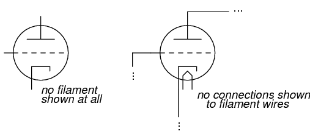
Se muestra un circuito triodo simple para ilustrar su funcionamiento básico como amplificador:
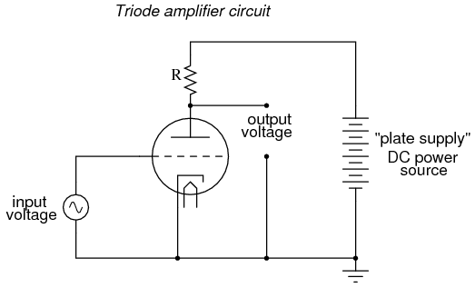
La señal de CA de bajo voltaje conectada entre la rejilla y el cátodo suprime alternativamente y luego mejora el flujo de electrones entre el cátodo y la placa. Esto provoca un cambio de voltaje en la salida del circuito (entre placa y cátodo). Las magnitudes de voltaje y corriente de CA en la rejilla del tubo son generalmente bastante pequeñas en comparación con la variación de voltaje y corriente en el circuito de placa. Por lo tanto, el triodo funciona como un amplificador de la señal de CA entrante (tomando energía CC de alto voltaje y alta corriente suministrada desde la gran fuente de CC de la derecha y "estrangulándola" por medio de la conductividad controlada del tubo).
En el triodo, la cantidad de corriente del cátodo a la placa (la corriente "controlada" es una función tanto del voltaje de la rejilla al cátodo (la señal de control) como del voltaje de la placa al cátodo (la fuerza electromotriz disponible para empujar los electrones a través del vacío). Desafortunadamente, ninguna de estas variables independientes tiene un efecto puramente lineal sobre la cantidad de corriente que pasa por el dispositivo (a menudo denominada simplemente "corriente de placa"). Es decir, la corriente del triodo no responde necesariamente de manera directa y proporcional a la voltajes aplicados.
En este circuito amplificador particular, las no linealidades se agravan, ya que el voltaje de la placa (con respecto al cátodo) cambia junto con el voltaje de la red (también con respecto al cátodo) a medida que el tubo regula la corriente de la placa. El resultado será una forma de onda del voltaje de salida que no se parece exactamente a la forma de onda del voltaje de entrada. En otras palabras, la peculiaridad del tubo triodo y la dinámica de este circuito en particulardistorsionarla forma de onda. Si realmente quisiéramos ser complejos acerca de cómo decimos esto, podríamos decir que el tubo introducearmoníaal no reproducir exactamente la forma de onda de entrada.
Otro problema con el comportamiento del triodo es el de la capacitancia parásita. Recordemos que siempre que tengamos dos superficies conductoras separadas por un medio aislante se formará un condensador. Cualquier voltaje entre esas dos superficies conductoras generará un campo eléctrico dentro de esa región aislante, potencialmente almacenando energía e introduciendo reactancia en un circuito. Tal es el caso del triodo, que resulta más problemático entre la rejilla y la placa. Es como si hubiera pequeños condensadores conectados entre los pares de elementos del tubo:
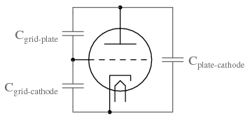
Ahora bien, esta capacitancia parásita es bastante pequeña y las impedancias reactivas suelen ser altas. Por lo general, es decir, a menos que se trate de frecuencias de radio. Como vimos con el tubo Audion de De Forest, la radio fue probablemente la principal aplicación de esta nueva tecnología, por lo que estas "pequeñas" capacitancias se convirtieron en algo más que un problema potencial. Fue necesario otro refinamiento en la tecnología de los tubos para superar las limitaciones del triodo.
The tetrode
Como sugiere el nombre, eltetrodoEl tubo contenía cuatro elementos: cátodo (con el filamento implícito o "calentador"), rejilla, placa y un nuevo elemento llamadopantalla. De construcción similar a la rejilla, la pantalla era una malla de alambre o bobina colocada entre la rejilla y la placa, conectada a una fuente de potencial CC positivo (con respecto al cátodo, como es habitual) igual a una fracción del voltaje de la placa. Cuando se conectaba a tierra a través de un condensador externo, la pantalla tenía el efecto de proteger electrostáticamente la rejilla de la placa. Sin la pantalla, la conexión capacitiva entre la placa y la rejilla podría provocar una importante retroalimentación de la señal a altas frecuencias, lo que provocaría oscilaciones no deseadas.
La pantalla, al tener menos área de superficie y menor potencial positivo que la placa, no atrajo muchos de los electrones que pasaban a través de la rejilla desde el cátodo, por lo que la gran mayoría de los electrones en el tubo aún volaron por la pantalla para ser recogidos por la placa:
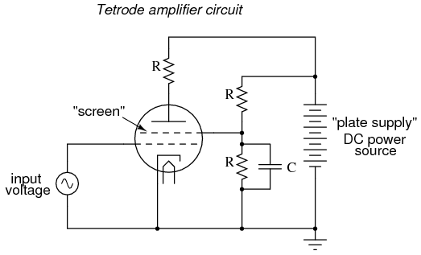
Con un voltaje de pantalla de CC constante, el flujo de electrones desde el cátodo a la placa dependía casi exclusivamente del voltaje de la red, lo que significa que el voltaje de la placa podía variar en un amplio rango con poco efecto sobre la corriente de la placa. Esto logró ganancias más estables en los circuitos amplificadores y una mejor linealidad para una reproducción más precisa de la forma de onda de la señal de entrada.
A pesar de las ventajas obtenidas con la adición de una pantalla, también hubo algunas desventajas. La desventaja más significativa estaba relacionada con algo conocido comoemisión secundaria. Cuando los electrones del cátodo golpean la placa a alta velocidad, pueden provocar que los electrones libres se suelten de los átomos del metal de la placa. Se dice que estos electrones, arrancados de la placa por el impacto de los electrones del cátodo, son "emitidos secundariamente". En un tubo triodo, la emisión secundaria no es un gran problema, pero en un tetrodo con una rejilla de pantalla cargada positivamente cerca, estos electrones secundarios serán atraídos hacia la pantalla en lugar de hacia la placa de la que provienen, lo que resultará en una pérdida de corriente de placa. Menos corriente de placa significa menos ganancia para el amplificador, lo cual no es bueno.
Se desarrollaron dos estrategias diferentes para abordar este problema del tubo tetrodo:potencia del haztubos ypentodos. Ambas soluciones dieron como resultado nuevos diseños de tubos con aproximadamente las mismas características eléctricas.
Beam power tubes
En el tubo de potencia del haz, se mantuvo la estructura básica de cuatro elementos del tetrodo, pero la rejilla y los cables de la pantalla se dispusieron cuidadosamente junto con un par de placas auxiliares para crear un efecto interesante: haces enfocados o "láminas" de electrones que viajan desde el cátodo hasta la placa. Estos haces de electrones formaron una "nube" estacionaria de electrones entre la pantalla y la placa (llamada "carga espacial") que actuaba para repeler los electrones secundarios emitidos desde la placa hacia la placa. Se añadió un conjunto de placas "formadoras de haces", cada una de ellas conectada al cátodo, para ayudar a mantener el enfoque adecuado del haz de electrones. Las bobinas de alambre de rejilla y de pantalla se dispusieron de tal manera que cada vuelta o envoltura de la pantalla cayera directamente detrás de una envoltura de la rejilla, lo que colocó los alambres de la pantalla en la "sombra" formada por la rejilla. Esta alineación precisa permitió que la pantalla aún realizara su función de blindaje con una interferencia mínima en el paso de los electrones del cátodo a la placa.
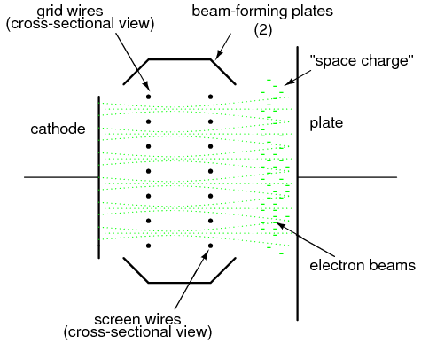
Esto resultó en una corriente de pantalla más baja (¡y más corriente de placa!) que un tubo tetrodo ordinario, con poco gasto adicional para la construcción del tubo.
Los tetrodos de potencia de haz a menudo se distinguían de sus homólogos que no eran de haz por un símbolo esquemático diferente, que mostraba las placas formadoras de haces:
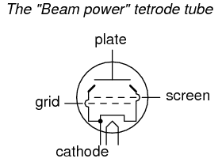
The pentode
Otra estrategia para abordar el problema de la atracción de electrones secundarios por la pantalla fue la adición de un quinto elemento de alambre a la estructura del tubo: unsupresor. Estos tubos de cinco elementos se denominaron naturalmentepentodos.
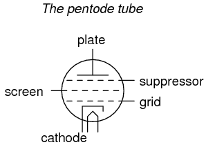
El supresor era otra bobina o malla de alambre situada entre la pantalla y la placa, generalmente conectada directamente al potencial de tierra. En algunos diseños de tubos de pentodo, el supresor estaba conectado internamente al cátodo para minimizar la cantidad de clavijas de conexión que tenían que penetrar la envoltura del tubo:
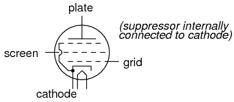
El trabajo del supresor era repeler cualquier electrón emitido secundariamente hacia la placa: un equivalente estructural de la carga espacial del tubo de potencia del haz. Esto, por supuesto, aumentó la corriente de la placa y disminuyó la corriente de la pantalla, lo que resultó en una mejor ganancia y rendimiento general. En algunos casos, también permitió un mayor voltaje de la placa operativa.
Combination tubes
De manera similar a la idea del circuito integrado, los diseñadores de tubos intentaron integrar diferentes funciones de los tubos en envolturas de un solo tubo para reducir los requisitos de espacio en los equipos electrónicos de tipo tubo más modernos. Una combinación común vista dentro de una sola carcasa de vidrio era dos diodos o dos triodos. La idea de colocar pares de diodos dentro de una sola envoltura tiene mucho sentido a la luz de los diseños de rectificadores de onda completa de suministro de energía, que siempre requieren múltiples diodos.
Por supuesto, habría sido bastante imposible combinar miles de elementos de tubos en una sola envoltura de tubo de la misma manera que se pueden grabar miles de transistores en una sola pieza de silicio, pero los ingenieros aun así hicieron todo lo posible para superar los límites de la miniaturización y consolidación de tubos. Algunos de estos tubos, caprichosamente llamadoscompactadores, contenía cuatro o más elementos tubulares completos dentro de un solo sobre.
A veces, las funciones de dos tubos diferentes se podían integrar en un solo tubo combinado de una manera que simplemente funcionaba de manera más elegante que dos tubos. Un ejemplo de esto fue elconvertidor pentagrid, más generalmente llamadoheptodo, utilizado en algunos diseños de radio superheterodinos. Estos tubos contenían siete elementos: 5 rejillas más un cátodo y una placa. Dos de las rejillas normalmente estaban reservadas para la entrada de señales, las otras tres relegadas a funciones de detección y supresión (mejoras del rendimiento). Combinando las funciones superheterodinas del oscilador y el mezclador de señales en un solo tubo, el acoplamiento de señales entre estas dos etapas era intrínseco. En lugar de tener circuitos de oscilador y mezclador separados, el oscilador creaba un voltaje de CA y el mezclador "mezclaba" ese voltaje con otra señal, la sección del oscilador del convertidor pentagrid creó una corriente de electrones que oscilaba en intensidad y luego pasaba directamente a través de otra rejilla para "mezclarse" con otra señal.
Este mismo tubo a veces se usaba de manera diferente: aplicando un voltaje de CC a una de las rejillas de control, se podía cambiar la ganancia del tubo por una señal impresa en la otra rejilla de control. Esto fue conocido comovariable-muoperación, porque el "mu" (μ) del tubo (su factor de amplificación, medido como una proporción del cambio de voltaje de placa a cátodo sobre el cambio de voltaje de rejilla a cátodo con una corriente de placa constante) podría alterarse a voluntad mediante una señal de voltaje de control de CC.
Los ingenieros electrónicos emprendedores también descubrieron formas de explotar las capacidades multivariables de tubos "menores" como los tetrodos y pentodos. Una de esas formas fue la llamadaultralinealAmplificador de potencia de audio, inventado por un par de ingenieros llamados Hafler y Keroes, que utiliza un tubo tetrodo en combinación con un transformador de salida "con derivación" para proporcionar mejoras sustanciales en la linealidad del amplificador (disminuciones en los niveles de distorsión). Considere un amplificador de válvulas triodo de "un solo extremo" con un transformador de salida que acopla la potencia al altavoz:
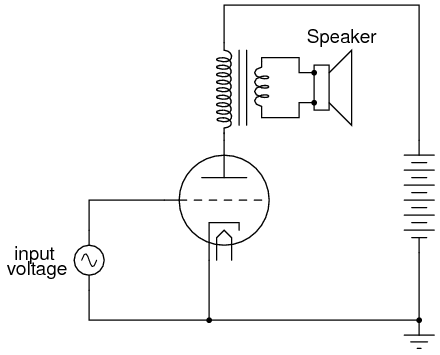
Si sustituimos un triodo por un tetrodo en este circuito, veremos mejoras en la ganancia del circuito resultantes del blindaje electrostático que ofrece la pantalla, evitando retroalimentación no deseada entre la placa y la rejilla de control:
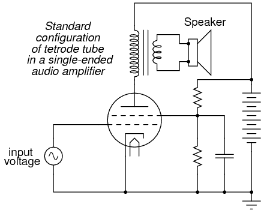
Sin embargo, la pantalla del tetrodo puede usarse para funciones distintas a simplemente proteger la rejilla de la placa. También se puede utilizar como un elemento de control más, como la propia rejilla. Si se realiza una "toma" en el devanado primario del transformador y esta toma se conecta a la pantalla, la pantalla recibirá un voltaje que varía con la señal que se amplifica (retroalimentación). Más específicamente, la señal de retroalimentación es proporcional a la tasa de cambio del flujo magnético en el núcleo del transformador (dΦ/dt), mejorando así la capacidad del amplificador para reproducir la forma de onda de la señal de entrada en los terminales del altavoz y no solo en el devanado primario del transformador:
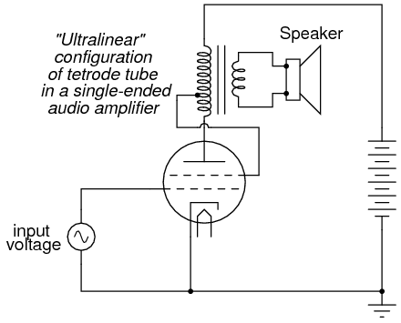
Esta retroalimentación de señal produce mejoras significativas en la linealidad del amplificador (y en consecuencia, en la distorsión), siempre y cuando se tomen precauciones para no "sobrecargar" la pantalla con un voltaje positivo demasiado grande con respecto al cátodo. Como concepto, el diseño ultralineal (retroalimentación de pantalla) demuestra la flexibilidad de operación otorgada por múltiples elementos de rejilla dentro de un solo tubo: una capacidad rara vez igualada por los componentes semiconductores.
Algunos diseños de tubos combinaban múltiples funciones de los tubos de la manera más económica: placas duales con un solo cátodo, las corrientes para cada una de las placas controladas por conjuntos separados de rejillas de control. Ejemplos comunes de estos tubos fuerontriodo-heptodo and triodo-hexodotubos (un tubo hexodo es un tubo con cuatro rejillas, un cátodo y una placa).
Otros diseños de tubos simplemente incorporaron estructuras de tubos separados dentro de una única envoltura de vidrio para mayor economía. Los tubos de doble diodo (rectificador) eran bastante comunes, al igual que los tubos de doble triodo, especialmente cuando la disipación de potencia de cada tubo era relativamente baja.
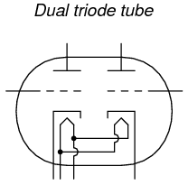
Los modelos 12AX7 y 12AU7 son ejemplos comunes de válvulas de triodo dual, ambos de baja potencia. El 12AX7 es especialmente común como válvula preamplificadora en circuitos amplificadores de guitarra eléctrica.
Tube parameters
Para los transistores de unión bipolar, la medida fundamental de amplificación es la relación Beta (β), definida como la relación entre la corriente del colector y la corriente de la base (IC/IB). Otras características del transistor, como la resistencia de la unión, que en algunos circuitos amplificadores pueden afectar el rendimiento hasta β, se cuantifican para beneficio del análisis del circuito. Los tubos de electrones no son diferentes, ya que sus características de rendimiento han sido exploradas y cuantificadas hace mucho tiempo por ingenieros eléctricos.
Antes de que podamos hablar significativamente sobre estas características, debemos definir varias variables matemáticas utilizadas para expresar mediciones comunes de voltaje, corriente y resistencia, así como algunas de las cantidades más complejas:
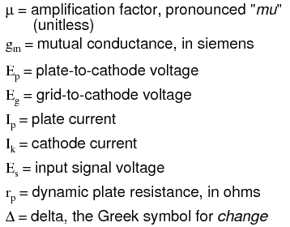
Las dos medidas más básicas de las características de un tubo amplificador son su factor de amplificación (μ) y su conductancia mutua (gm), también conocido comotransconductancia. La transconductancia se define aquí de la misma manera que para los transistores de efecto de campo, otra categoría de dispositivos controlados por voltaje. Aquí están las dos ecuaciones que definen cada una de estas características de rendimiento:
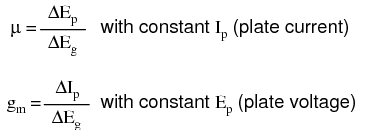
Otra medida importante, aunque más abstracta, del rendimiento del tubo es suresistencia de la placa. Esta es la medida del cambio de voltaje de la placa sobre el cambio de corriente de la placa para un valor constante de voltaje de la red. En otras palabras, esta es una expresión de en qué medida el tubo actúa como una resistencia para cualquier cantidad dada de voltaje de red, análoga al funcionamiento de un JFET en su modo óhmico:
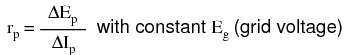
El lector astuto notará que la resistencia de la placa se puede determinar dividiendo el factor de amplificación por la transconductancia:
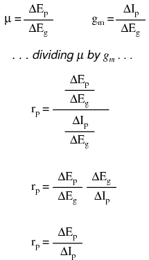
Estas tres medidas de rendimiento de los tubos están sujetas a cambios de un tubo a otro (así como las relaciones β entre dos transistores bipolares "idénticos" nunca son exactamente las mismas) y entre diferentes condiciones de funcionamiento. Esta variabilidad se debe en parte a las inevitables no linealidades de los tubos de electrones y en parte a cómo se definen. Incluso suponiendo la existencia de un tubo perfectamente lineal, será imposible que estas tres medidas sean constantes en los rangos de operación permitidos. Considere un tubo queperfectamenteregula la corriente en cualquier cantidad dada de voltaje de la red (como un transistor bipolar con un β absolutamente constante): la resistencia de la placa de ese tubodebevarían con el voltaje de la placa, porque la corriente de la placa no cambiará aunque el voltaje de la placa sí lo haga.
Sin embargo, los tubos fueron (y son) clasificados según estos valores en determinadas condiciones de funcionamiento, y pueden tener sus curvas características publicadas al igual que los transistores.
Ionization (gas-filled) tubes
Hasta ahora hemos explorado tubos que están totalmente "evacuados" de todo gas y vapor dentro de sus envolturas de vidrio, conocidos propiamente comotubos de vacío. Sin embargo, con la adición de ciertos gases o vapores, los tubos adquieren características significativamente diferentes y pueden cumplir ciertas funciones especiales en los circuitos electrónicos.
Cuando se aplica un voltaje suficientemente alto a lo largo de una distancia ocupada por un gas o vapor, o cuando ese gas o vapor se calienta lo suficiente, los electrones de esas moléculas de gas serán arrancados de sus respectivos núcleos, creando una condición deionización. Una vez liberados los electrones de sus enlaces electrostáticos con los núcleos de los átomos, quedan libres para migrar en forma de corriente, lo que convierte al gas ionizado en un conductor de electricidad relativamente bueno. En este estado, el gas se denomina más propiamenteplasma.
El gas ionizado no es un conductor perfecto. Como tal, el flujo de electrones a través del gas ionizado tenderá a disipar energía en forma de calor, ayudando así a mantener el gas en estado de ionización. El resultado de esto es un tubo que comenzará a conducir bajo ciertas condiciones, luego tenderá a permanecer en un estado de conducción hasta que el voltaje aplicado a través del gas y/o la corriente generadora de calor caiga a un nivel mínimo.
El observador astuto notará que este es precisamente el tipo de comportamiento exhibido por una clase de dispositivos semiconductores llamados "tiristores", que tienden a permanecer "encendidos" una vez encendidos y tienden a permanecer "apagados" una vez apagados. Se puede decir que los tubos llenos de gas manifiestan esta misma propiedad dehistéresis.
A diferencia de sus homólogos de vacío, los tubos de ionización a menudo se fabricaban sin ningún filamento (calentador). Estos fueron llamadoscátodo fríotubos, con las versiones calentadas designadas comocátodo calientetubos. El hecho de que el tubo contuviera o no una fuente de calor obviamente afectaba las características de un tubo lleno de gas, pero no en la medida en que la falta de calor afectaría el rendimiento de un tubo de vacío duro.
El tipo más simple de dispositivo de ionización no es necesariamente un tubo; más bien, está construido con dos electrodos separados por un espacio lleno de gas. simplemente llamado unvía de chispa, el espacio entre los electrodos puede estar ocupado por aire ambiente, otras veces por un gas especial, en cuyo caso el dispositivo debe tener algún tipo de envoltura sellada.
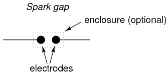
Una aplicación principal de los explosores es la protección contra sobretensiones. Diseñado para no ionizarse o "descomponerse" (comenzar a conducir), con un voltaje normal del sistema aplicado a través de los electrodos, la función del explosor es conducir en caso de un aumento significativo en el voltaje. Una vez conductor, actuará como una carga pesada, manteniendo baja la tensión del sistema a través de su gran consumo de corriente y la posterior caída de tensión a lo largo de los conductores y otras impedancias en serie. En un sistema diseñado adecuadamente, el explosor dejará de conducir ("se extinguirá") cuando el voltaje del sistema disminuya a un nivel normal, muy por debajo del voltaje requerido para iniciar la conducción.
Una advertencia importante sobre las descargas de chispas es su vida significativamente finita. La descarga generada por un dispositivo de este tipo puede ser bastante violenta y, como tal, tenderá a deteriorar las superficies de los electrodos mediante picaduras y/o fusión.
Se puede hacer que los explosores conduzcan según una orden colocando un tercer electrodo (generalmente con un borde o punta afilada) entre los otros dos y aplicando un pulso de alto voltaje entre ese electrodo y uno de los otros electrodos. El pulso creará una pequeña chispa entre los dos electrodos, ionizando parte del camino entre los dos electrodos grandes y permitiendo la conducción entre ellos si el voltaje aplicado es lo suficientemente alto:
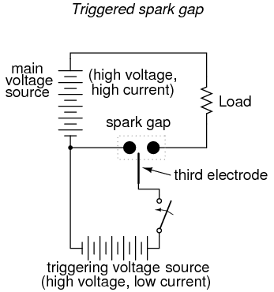
Se pueden construir explosores tanto de tipo disparado como no disparado para manejar grandes cantidades de corriente, ¡algunos incluso en el rango de megaamperios (millones de amperios)! El tamaño físico es el principal factor limitante de la cantidad de corriente que un explosor puede manejar de forma segura y confiable.
Cuando los dos electrodos principales se colocan en un tubo sellado lleno de un gas especial, setubo de descargaestá formado. El tipo más común de tubo de descarga es la luz de neón, utilizada popularmente como fuente de iluminación colorida, dependiendo el color de la luz emitida del tipo de gas que llena el tubo.
La construcción de las lámparas de neón se parece mucho a la de los explosores, pero las características operativas son bastante diferentes:
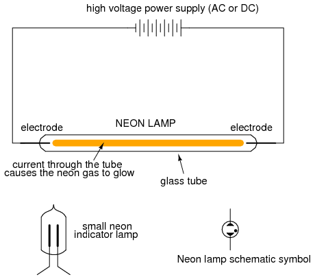
Al controlar el espaciado de los electrodos y el tipo de gas en el tubo, se puede hacer que las luces de neón conduzcan sin consumir las corrientes excesivas que generan las chispas. Todavía exhiben histéresis en el sentido de que se necesita un voltaje más alto para iniciar la conducción que para que se "extingan", y su resistencia es definitivamente no lineal (cuanto más voltaje se aplica a través del tubo, más corriente, por lo tanto más calor, por lo tanto, menor resistencia). Dada esta tendencia no lineal, no se debe permitir que el voltaje a través de un tubo de neón exceda un cierto límite, para que el tubo no se dañe por temperaturas excesivas.
Esta tendencia no lineal le da al tubo de neón una aplicación distinta a la iluminación colorida: puede actuar como un diodo zener, "fijando" el voltaje a través de él al consumir más y más corriente si el voltaje disminuye. Cuando se utiliza de esta manera, el tubo se conoce comotubo incandescente, otubo regulador de voltaje, y era un medio popular de regulación de voltaje en la época del diseño de circuitos de tubos de electrones.
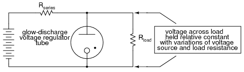
Tome nota del punto negro que se encuentra en el símbolo del tubo que se muestra arriba (y en el símbolo de la lámpara de neón que se muestra antes). Ese marcador indica que el tubo está lleno de gas. Es un marcador común utilizado en todos los símbolos de tubos llenos de gas.
Un ejemplo de tubo incandescente diseñado para la regulación de voltaje fue el VR-150, con un voltaje de regulación nominal de 150 voltios. Su resistencia dentro de los límites permitidos de corriente podría variar de 5 kΩ a 30 kΩ, un lapso de 6:1. Al igual que los circuitos reguladores de diodo Zener actuales, los reguladores de tubos incandescentes podrían acoplarse a tubos amplificadores para una mejor regulación del voltaje y rangos de corriente de carga más altos.
Si un triodo normal se llenara con gas en lugar de un fuerte vacío, manifestaría toda la histéresis y la no linealidad de otros tubos de gas con una ventaja importante: la cantidad de voltaje aplicado entre la rejilla y el cátodo determinaría el voltaje mínimo entre placa y cátodo necesario para iniciar la conducción. En esencia, este tubo era el equivalente del semiconductor SCR (Rectificador Controlado por Silicio), y se le llamótiratrón.
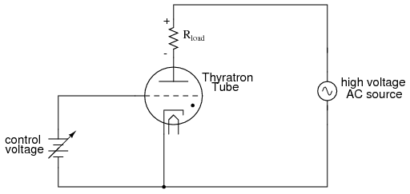
Cabe señalar que el esquema que se muestra arriba está muy simplificado para la mayoría de los propósitos y diseños de tubos de tiratrón. Algunos tiratrones, por ejemplo, requerían que el voltaje de la red cambiara la polaridad entre sus estados "encendido" y "apagado" para poder funcionar correctamente. Además, ¡algunos tiratrones tenían más de una rejilla!
Los tiratrones encontraron uso de la misma manera que los SCR encuentran uso hoy en día: controlando CA rectificada para grandes cargas, como motores. Los tubos Thyratron se han fabricado con diferentes tipos de rellenos de gas para diferentes características: gas inerte (químicamente no reactivo), gas hidrógeno y mercurio (se vaporiza en forma de gas cuando se activa). El deuterio, un isótopo raro del hidrógeno, se utilizó en algunas aplicaciones especiales que requerían la conmutación de altos voltajes.
Display tubes
Además de realizar tareas de amplificación y conmutación, los tubos pueden diseñarse para que sirvan como dispositivos de visualización.
Quizás el tubo de visualización más conocido sea eltubo de rayos catódicos, oCRT. Originalmente inventados como un instrumento para estudiar el comportamiento de los "rayos catódicos" (electrones) en el vacío, estos tubos se convirtieron en instrumentos útiles para detectar voltaje y luego como dispositivos de proyección de video con la llegada de la televisión. La principal diferencia entre los CRT utilizados en osciloscopios y los CRT utilizados en televisores es que la variedad de osciloscopio utiliza exclusivamente deflexión electrostática (placa), mientras que los televisores utilizan deflexión electromagnética (bobina). Las placas funcionan mucho mejor que las bobinas en una gama más amplia de frecuencias de señal, lo cual es excelente para los osciloscopios pero irrelevante para los televisores, ya que el haz de electrones de un televisor barre vertical y horizontalmente a frecuencias fijas. Las bobinas de desviación electromagnética son muy preferidas en la construcción de CRT de televisión porque no tienen que atravesar la envoltura de vidrio del tubo, lo que disminuye los costos de producción y aumenta la confiabilidad del tubo.
Un "primo" interesante del CRT es elOjo de gato or Ojo mágicotubo indicador. Básicamente, este tubo es un dispositivo de medición de voltaje con una pantalla que se asemeja a un anillo verde brillante. Los electrones emitidos por el cátodo de este tubo inciden en una pantalla fluorescente, provocando la emisión de luz de color verde. La forma del brillo producido por la pantalla fluorescente varía a medida que cambia la cantidad de voltaje aplicado a una rejilla:
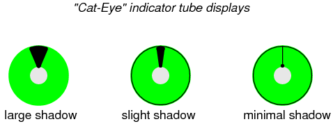
El ancho de la sombra está directamente determinado por la diferencia de potencial entre el electrodo de control y la pantalla fluorescente. El electrodo de control es una varilla estrecha colocada entre el cátodo y la pantalla fluorescente. Si ese electrodo de control (varilla) es significativamente más negativo que la pantalla fluorescente, desviará algunos electrones lejos de esa área de la pantalla. El área de la pantalla "sombreada" por el electrodo de control aparecerá más oscura cuando haya una diferencia de voltaje significativa entre los dos. Cuando el electrodo de control y la pantalla fluorescente tienen el mismo potencial (voltaje cero entre ellos), el efecto de sombra será mínimo y la pantalla estará igualmente iluminada.
El símbolo esquemático de un tubo "ojo de gato" se parece a esto:
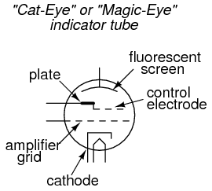
Aquí hay una fotografía de un tubo tipo ojo de gato, que muestra la región de visualización circular, así como la envoltura de vidrio, el casquillo (negro, en el extremo más alejado del tubo) y parte de su estructura interna:
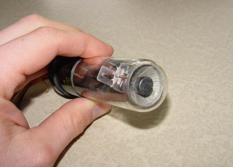
Normalmente, sólo el extremo del tubo sobresaldría de un agujero en el panel de instrumentos, para que el usuario pudiera ver la pantalla circular fluorescente.
En su uso más simple, un tubo "ojo de gato" podría funcionar sin el uso de la rejilla del amplificador. Sin embargo, para hacerlo más sensible, la rejilla del amplificadorisusado, y se usa así:
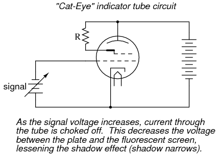
El cátodo, la rejilla del amplificador y la placa actúan como un triodo para crear grandes cambios en el voltaje de la placa al cátodo para pequeños cambios en el voltaje de la rejilla al cátodo. Debido a que el electrodo de control está conectado internamente a la placa, es eléctricamente común a ella y por lo tanto posee la misma cantidad de voltaje con respecto al cátodo que la placa. Así, los grandes cambios de voltaje inducidos en la placa debido a pequeños cambios de voltaje en la rejilla del amplificador terminan provocando grandes cambios en el ancho de la sombra vista por quien observa el tubo.
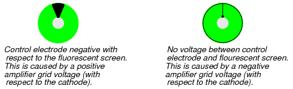
Los tubos "ojo de gato" nunca fueron lo suficientemente precisos como para estar equipados con una escala graduada como es el caso de los CRT y los movimientos de los medidores electromecánicos, pero sirvieron bien como detectores nulos en circuitos puente y como indicadores de intensidad de señal en circuitos de sintonización de radio. Una desafortunada limitación del tubo "ojo de gato" como detector nulo fue el hecho de que no era directamente capaz de indicar voltaje en ambas polaridades.
Microwave tubes
Para aplicaciones de frecuencia extremadamente alta (por encima de 1 GHz), las capacitancias entre electrodos y los retrasos en el tiempo de tránsito de la construcción de tubos de electrones estándar se vuelven prohibitivos. Sin embargo, las formas creativas en que se pueden construir los tubos parecen no tener fin, y se han creado varios diseños de tubos de electrones de alta frecuencia para superar estos desafíos.
En 1939 se descubrió que una cavidad toroidal hecha de material conductor llamadaresonador de cavidadrodear un haz de electrones de intensidad oscilante podría extraer energía del haz sin interceptarlo. Los campos eléctricos y magnéticos oscilantes asociados con el haz "resonaron" dentro de la cavidad, de una manera similar a los sonidos de los automóviles en movimiento que hacen eco en un cañón al borde de la carretera, permitiendo que la energía de radiofrecuencia se transfiera desde el haz a una guía de ondas o cable coaxial conectado al resonador con un bucle de acoplamiento. El tubo se llamótubo de salida inductivo, oIOT:
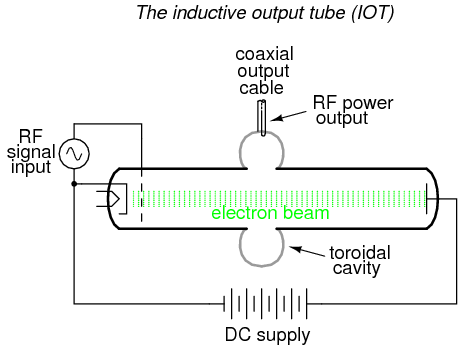
Dos de los investigadores que contribuyeron decisivamente al desarrollo inicial del IOT, un par de hermanos llamados Sigurd y Russell Varian, agregaron un segundo resonador de cavidad para la entrada de señal al tubo de salida inductivo. Este resonador de entrada actuaba como un par de rejillas inductivas para "agrupar" y liberar alternativamente paquetes de electrones por el espacio de deriva del tubo, de modo que el haz de electrones estaría compuesto de electrones que viajaban a diferentes velocidades. Esta "modulación de velocidad" del haz se tradujo en el mismo tipo de variación de amplitud en el resonador de salida, donde se extraía energía del haz. Los hermanos Varian llamaron a su invento unklistrón.
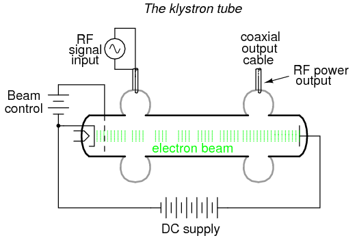
Otro invento de los hermanos Varian fue elklistrón reflejotubo. En este tubo, los electrones emitidos por el cátodo calentado viajan a través de las rejillas de la cavidad hacia la placa repelente, luego son repelidos y devueltos por donde vinieron (de ahí el nombre).reflejo) a través de las rejillas de la cavidad. En este tubo se desarrollarían oscilaciones autosostenidas, cuya frecuencia podría cambiarse ajustando el voltaje del repelente. Por tanto, este tubo funcionaba como un oscilador controlado por voltaje.
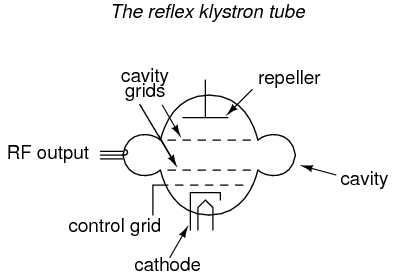
Como oscilador controlado por voltaje, los tubos reflejos de klistrón servían comúnmente como "osciladores locales" para equipos de radar y receptores de microondas:
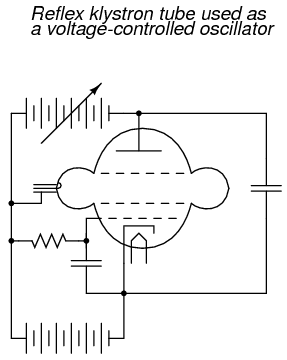
Inicialmente desarrollados como dispositivos de baja potencia cuya salida requería amplificación adicional para el uso de transmisores de radio, el diseño del klistrón réflex se perfeccionó hasta el punto en que los tubos podían servir como dispositivos de energía por derecho propio. Desde entonces, los klistrones reflejos han sido reemplazados por dispositivos semiconductores en la aplicación de osciladores locales, pero los klistrones de amplificación continúan encontrando uso en transmisores de radio de alta potencia y alta frecuencia y en aplicaciones de investigación científica.
Un tubo de microondas realiza su tarea tan bien y de forma tan rentable que sigue reinando en el competitivo ámbito de la electrónica de consumo: el tubo de magnetrón. Este dispositivo forma el corazón de cada horno microondas, genera varios cientos de vatios de energía de RF de microondas que se utiliza para calentar alimentos y bebidas, y lo hace en las condiciones más agotadoras para un tubo: encendido y apagado en momentos aleatorios y durante duraciones aleatorias.
Los tubos de magnetrón son representativos de un tipo de tubo completamente diferente al IOT y al klistrón. Mientras que estos últimos tubos utilizan un haz de electrones lineal, el magnetrón dirige su haz de electrones en un patrón circular mediante un fuerte campo magnético:
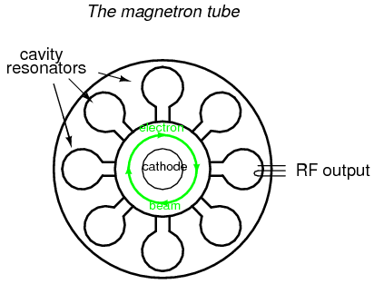
Una vez más, los resonadores de cavidad se utilizan como "circuitos de tanque" de frecuencia de microondas, extrayendo energía del haz de electrones que pasa de forma inductiva. Como todos los dispositivos de frecuencia de microondas que utilizan un resonador de cavidad, al menos una de las cavidades del resonador se golpea con unbucle de acoplamiento: un bucle de alambre que acopla magnéticamente el cable coaxial a la estructura resonante de la cavidad, lo que permite que la energía de RF se dirija fuera del tubo hacia una carga. En el caso del horno microondas, la potencia de salida se dirige a través de una guía de ondas a la comida o bebida que se va a calentar, y las moléculas de agua que contiene actúan como pequeñas resistencias de carga, disipando la energía eléctrica en forma de calor.
El imán necesario para el funcionamiento del magnetrón no se muestra en el diagrama. El flujo magnético corre perpendicular al plano de la trayectoria circular del electrón. En otras palabras, desde la vista del tubo que se muestra en el diagrama, estás mirando directamente a uno de los polos magnéticos.
Tubes versus Semiconductors
Dedicar un capítulo entero en un texto de electrónica moderna al diseño y función de los tubos de electrones puede parecer un poco extraño, considerando que la tecnología de semiconductores tiene tubos casi obsoletos en casi todas las aplicaciones. Sin embargo, tiene sentido explorar los tubos no sólo con fines históricos, sino también para aquellas aplicaciones específicas que requieren la frase calificativa "casicada aplicación" en lo que respecta a la supremacía de los semiconductores.
En algunas aplicaciones, los tubos de electrones no sólo siguen teniendo uso práctico, sino que realizan sus respectivas tareas mejor que cualquier dispositivo de estado sólido inventado hasta ahora. En algunos casos, el rendimiento y la confiabilidad de la tecnología de tubos de electrones sonfarsuperior.
En los campos de la conmutación de circuitos de alta potencia y alta velocidad, tubos especializados como los tiratrones y krytrones de hidrógeno son capaces de conmutar cantidades de corriente mucho mayores, mucho más rápido que cualquier dispositivo semiconductor diseñado hasta la fecha. Los límites térmicos y temporales de la física de los semiconductores imponen limitaciones a la capacidad de conmutación de las que están exentos los tubos, que no funcionan según los mismos principios.
En aplicaciones de transmisores de microondas de alta potencia, la excelente tolerancia térmica de los tubos por sí sola asegura su dominio sobre los semiconductores. La conducción de electrones a través de materiales semiconductores se ve muy afectada por la temperatura. La conducción de electrones a través del vacío no lo es. Como consecuencia de ello, los límites térmicos prácticos de los dispositivos semiconductores son bastante bajos en comparación con los de los tubos. Ser capaz de operar tubos a temperaturas mucho mayores que los dispositivos semiconductores equivalentes permite que los tubos disipen más energía térmica para una cantidad determinada de área de disipación, lo que los hace más pequeños y livianos en aplicaciones continuas de alta potencia.
Otra ventaja decisiva de los tubos sobre los componentes semiconductores en aplicaciones de alta potencia es su capacidad de reconstrucción. Cuando un tubo grande falla, se puede desmontar y reparar a un costo mucho menor que el precio de compra de un tubo nuevo. Cuando falla un componente semiconductor, grande o pequeño, generalmente no hay forma de repararlo.
La siguiente fotografía muestra el panel frontal de un transmisor de radio AM de 5 kW antiguo de los años 1960. Uno de los dos tubos de potencia de la marca "Eimac" se puede ver en un área empotrada, detrás de la puerta de vidrio. Según el ingeniero de la estación que visitó las instalaciones, el coste de reconstrucción de un tubo de este tipo es de sólo 800 dólares: ¡bastante barato en comparación con el coste de un tubo nuevo, y todavía bastante razonable en comparación con el precio de un componente semiconductor nuevo y comparable!
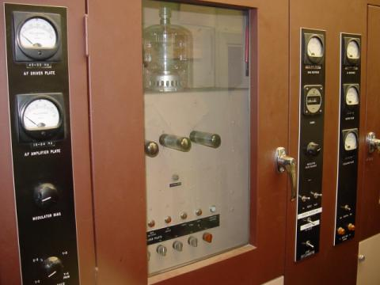
Los tubos, al ser menos complejos en su fabricación que los componentes semiconductores, también son potencialmente más baratos de producir, aunque el enorme volumen de producción de dispositivos semiconductores en el mundo contrarresta en gran medida esta ventaja teórica. La fabricación de semiconductores es bastante compleja, implica muchas sustancias químicas peligrosas y requiere entornos de montaje súper limpios. Los tubos no son esencialmente más que vidrio y metal, con un sello de vacío. Las tolerancias físicas son lo suficientemente "flexibles" como para permitir el ensamblaje manual de los tubos de vacío, y el trabajo de ensamblaje no necesita realizarse en un ambiente de "sala limpia", como es necesario para la fabricación de semiconductores.
Un área moderna donde los tubos de electrones disfrutan de supremacía sobre los componentes semiconductores es en los mercados de amplificadores de audio profesionales y de alta gama, aunque esto se debe en parte a la cultura musical. Muchos guitarristas profesionales, por ejemplo, prefieren los amplificadores de válvulas a los amplificadores de transistores debido a la distorsión específica producida por los circuitos de válvulas. Un amplificador de guitarra eléctrica está diseñado paraproducir distorsiónen lugar de evitar la distorsión como es el caso de los amplificadores de reproducción de audio (por eso una guitarra eléctrica suena tan diferente a una guitarra acústica), y el tipo de distorsión producida por un amplificador es tanto una cuestión de gusto personal como de medida técnica. Dado que la música rock en particular nació con guitarristas que tocaban equipos amplificadores de válvulas, existe un nivel significativo de "atractivo de válvulas" inherente al género en sí, y este atractivo se muestra en la demanda continua de amplificadores de guitarra "de válvulas" entre los guitarristas de rock.
Como ejemplo de la actitud de algunos guitarristas, considere la siguiente cita extraída de la página del glosario técnico de un sitio web sobre amplificadores de válvulas que permanecerá sin nombre:
Estado sólido: Un componente que ha sido diseñado específicamente para hacer que un amplificador de guitarra suene mal. En comparación con las válvulas, estos dispositivos pueden tener una vida útil muy larga, lo que garantiza que su amplificador conservará su sonido fino, sin vida y zumbido durante mucho tiempo.
En el área de amplificadores de reproducción de audio (amplificadores de estudio de música y amplificadores de entretenimiento en el hogar), lo mejor es que un amplificador reproduzca la señal musical con la mayorpequeñodistorsión posible. Paradójicamente, a diferencia del mercado de amplificadores de guitarra, donde la distorsión es un objetivo de diseño, el audio de alta gama es otra área donde los amplificadores de válvulas disfrutan de una demanda continua por parte de los consumidores. Aunque se podría suponer que el requisito objetivo y técnico de una baja distorsión eliminaría cualquier sesgo subjetivo por parte de los audiófilos, estaríamos muy equivocados. El mercado de equipos amplificadores "tubulares" de alta gama es bastante volátil y cambia rápidamente con las tendencias y las modas, impulsado por afirmaciones altamente subjetivas de sonido "mágico" por parte de vendedores y revisores de sistemas de audio. Al igual que en el mundo de la guitarra eléctrica, existe una devoción no pequeña por parte de algunos sectores del mundo audiófilo hacia los amplificadores de válvulas. Como ejemplo de esta irracionalidad, consideremos el diseño de muchos amplificadores de gama ultra alta, con chasis construidos para mostrar abiertamente los tubos en funcionamiento, aunque esta exposición física de los tubos obviamente aumenta el efecto indeseable demicrófonos(cambios en el rendimiento del tubo como resultado de las ondas sonoras que hacen vibrar la estructura del tubo).
Dicho esto, sin embargo, existe una gran cantidad de literatura técnica que contrasta los tubos con los semiconductores para el uso en amplificadores de potencia de audio, especialmente en el área del análisis de distorsión. Más de unos pocos ingenieros eléctricos competentes prefieren los diseños de amplificadores de válvulas a los de transistores, y son capaces de producir evidencia experimental que respalde su elección. La principal dificultad para cuantificar el rendimiento de un sistema de audio es la respuesta incierta del oído humano.AllLos amplificadores distorsionan su señal de entrada hasta cierto punto, especialmente cuando están sobrecargados, por lo que la pregunta es qué tipo de diseño de amplificador distorsiona menos. Sin embargo, dado que la audición humana es muy no lineal, las personas no interpretan todos los tipos de distorsión acústica de la misma manera, por lo que algunos amplificadores sonarán "mejor" que otros incluso si un análisis cuantitativo de distorsión con instrumentos electrónicos indica niveles de distorsión similares. Para determinar qué tipo de amplificador de audio distorsionará "lo mínimo" una señal musical, debemos considerar el oído y el cerebro humanos como parte de todo el sistema acústico. Dado que todavía no existe un modelo completo para la respuesta auditiva humana, la evaluación objetiva es, en el mejor de los casos, difícil. Sin embargo, algunas investigaciones indican que la distorsión característica de los circuitos amplificadores de válvulas (especialmente cuando están sobrecargados) es menos objetable que la distorsión producida por los transistores.
Los tubos también poseen la clara ventaja de una baja "deriva" en una amplia gama de condiciones operativas. A diferencia de los componentes semiconductores, cuyos voltajes de barrera, relaciones β, resistencias en masa y capacitancias de unión pueden cambiar sustancialmente con los cambios en la temperatura del dispositivo y/u otras condiciones operativas, las características fundamentales de un tubo de vacío permanecen casi constantes en un amplio rango de condiciones operativas, porque esas características están determinadas principalmente por las dimensiones físicas de los elementos estructurales del tubo (cátodo, rejilla(s) y placa) en lugar de las interacciones de partículas subatómicas en una red cristalina.
Esta es una de las principales razones por las que los diseñadores de amplificadores de estado sólido suelen diseñar sus circuitos para maximizar la eficiencia energética incluso cuando compromete el rendimiento de la distorsión, porque un amplificador ineficiente disipa mucha energía en forma de calor residual y las características del transistor tienden a cambiar sustancialmente con la temperatura. La "deriva" inducida por la temperatura dificulta la estabilización de los puntos "Q" y otras medidas importantes relacionadas con el rendimiento en un circuito amplificador. Desafortunadamente, la eficiencia energética y la baja distorsión parecen ser objetivos de diseño mutuamente excluyentes.
Por ejemplo, los circuitos amplificadores de audio de clase A suelen exhibir niveles de distorsión muy bajos, pero desperdician mucha energía, lo que significa que sería difícil diseñar un amplificador de clase A de estado sólido con una potencia nominal sustancial debido a la consiguiente deriva de las características del transistor. Por lo tanto, la mayoría de los diseñadores de amplificadores de audio de estado sólido eligen configuraciones de circuitos de clase B para una mayor eficiencia, aunque los diseños de clase B son conocidos por producir un tipo de distorsión conocida comodistorsión cruzada. Sin embargo, con válvulas es fácil diseñar un circuito amplificador de audio de clase A estable porque las válvulas no se ven tan afectadas negativamente por los cambios de temperatura experimentados en una configuración de circuito tan ineficiente desde el punto de vista energético.
Sin embargo, los parámetros de rendimiento de los tubos tienden a "desviarse" más que los dispositivos semiconductores cuando se miden durante largos períodos de tiempo (años). Un mecanismo importante del "envejecimiento" de los tubos parecen ser las fugas de vacío: cuando entra aire en el interior de un tubo de vacío, sus características eléctricas se alteran irreversiblemente. Este mismo fenómeno es una de las principales causas de la mortalidad de los tubos, o la razón por la que los tubos normalmente no duran tanto como sus respectivos homólogos de estado sólido. Sin embargo, cuando el vacío del tubo se mantiene a un nivel alto, es posible obtener un rendimiento y una vida útil excelentes. Un ejemplo de esto es un tubo de klistrón (utilizado para producir las ondas de radio de alta frecuencia utilizadas en un sistema de radar) que duró 240.000 horas de funcionamiento (citado por Robert S. Symons de la División de Dispositivos Electrónicos de Litton en su artículo informativo, "Tubes: Still vital after all These years", impreso en la edición de abril de 1998 deEspectro IEEErevista).
Al menos, la tensión entre los audiófilos sobre los tubos y los semiconductores ha estimulado un grado notable de experimentación e innovación técnica, sirviendo como un excelente recurso para aquellos que desean educarse en la teoría de los amplificadores. Desde una perspectiva más amplia, la versatilidad de la tecnología de tubos de electrones (diferentes configuraciones físicas, múltiples rejillas de control) sugiere el potencial para diseños de circuitos de una variedad mucho mayor que la que es posible utilizando semiconductores. Por esta y otras razones, los tubos de electrones nunca quedarán "obsoletos", pero seguirán cumpliendo funciones específicas y fomentando la innovación para aquellos ingenieros electrónicos, inventores y aficionados que no están dispuestos a dejar que sus mentes sean sofocadas por las convenciones.
Lecciones en circuitos eléctricoscopyright (C) 2000-2023 Tony R. Kuphaldt, según los términos y condiciones delCC BY License.